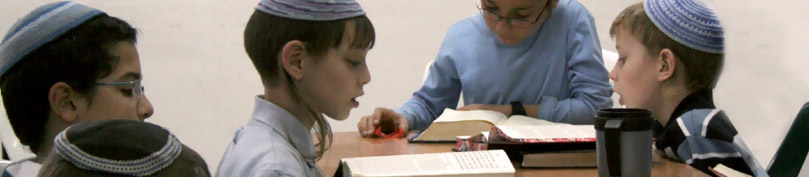
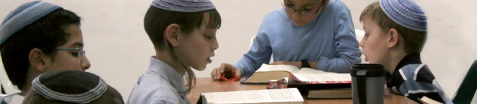

בלב המרכז התרבותי של מדינת ישראל, בין בורסת היהלומים למגדלי עזריאלי, בין ה'קריה' לכיכר המדינה, שוכנת לה קהילה איכותית הפועלת במסירות נפש למען תורת ישראל ועם ישראל.
הקהילה מונה כ-80 משפחות והיא מתרכזת סביב ישיבת תל אביב "מעלה אליהו". חלק ממשפחות הקהילה הם אברכים הלומדים בישיבה, וחלקם בוגרי הישיבה שבחרו להמשיך ולהיות חלק ממפעל משמעותי זה גם לאחר שפנו לתחומי עשייה אחרים.
הקהילה שמה לה למטרה לדאוג לחיים חברתיים מלאים, תוססים ובעלי משמעות לצד השתלבות במרחב הסובב ועשייה ערכית. גידול ילדים בתל-אביב הוא ללא ספק אתגר גדול, והסביבה החברתית והתרבותית מזמנת שאלות חינוכיות רבות והתמודדות מתמדת. בקהילה מקדישים לכך מחשבה ומושקעים מאמצים רבים לגדל ולחנך את הילדים באקלים חינוכי טבעי ובריא המושתת על ערכי קודש.
בגיל הרך עומד לרשות המשפחות "מעון דפנה" שהוקם ע"י ישיבת תל אביב. המעון מיועד לילדי הקהילה והוא פותח את שעריו לכל מי שמעוניין במסגרת חינוכית באווירה דתית.
בגילאי הגן ובית הספר הילדים משתלבים בדרך כלל במערך החינוך הממלכתי-דתי בעיר. הקהילה שותפה בעיצוב דמותה החינוכית של המערכת ולוקחת בה חלק פעיל.
רבים מחברי הקהילה משתלבים בעבודה במגוון מסגרות החינוך והרווחה של העיר תל-אביב.
מבט לחלק מחיי החברה הפעילים של הקהילה:
אם גם אתם רוצים להיות חלק מהעשייה הגדולה, אתם מוזמנים אלינו.
לפרטים ניתן לפנות לרכזת הקהילה, ולמידע וסיוע למשפחות חדשות יסכה: 052-8109223, rakezetmaale@gmail.com